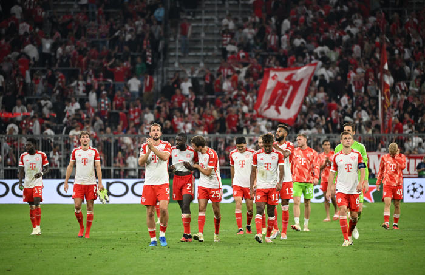

Champions League: Bayern Munich defeats Manchester United as Arsenal crushes PSV
In other Champions League fixtures on Wednesday, Napoli and Real Madrid both came away with narrow last-minute victories while Lens and Sevilla tied at the Ramon Sanchez-Pizjuan Stadium.
You can share an article by clicking on the share icons at the top right of it. The total or partial reproduction of an article, without the prior written authorization of Le Monde, is strictly forbidden. For more information, see our Terms and Conditions.
Two weeks after the inaugural victory of Les Bleus over New Zealand, the Stade de France was once again the scene of a clash with the feel of a final, on Saturday, September 23. No opening ceremony, no anthems sung in canon by a children's choir this time, but rather another duel between two rugby heavyweights, which had the 78,542 spectators in the stands holding their breath.
On the left side of the ring, Ireland, first nation in the world rankings and winner of the last Six Nations Championship, with the added bonus of a "grand slam". On the other side, South Africa, the reigning world champions. In the end, it was the Irish who emerged victorious (13-8) to record their 16th win in a row and, above all, take a major step towards qualification for the World Cup quarter-finals.
The start of the competition had been an opportunity for coach Andy Farrell's men to show that they weren't perched at the top of the world rankings for nothing. Two thrashings of Romania (82-8) and above all Tonga (59-16) were enough to send a clear message to their rivals. All that remained then was to deliver it in person, which the "men in green" were careful to do on Saturday evening, in front of a mostly Celtic crowd who loudly supported them.
Read more Article réservé à nos abonnés Rugby World Cup: Victory over Tonga cements Ireland's status as competition favorite "When you play against the reigning world champions, it's always going to be incredibly tough and it was. They didn't let us down in terms of the physicality of the game but I thought we fronted up and gave some good stuff ourselves in that regard," explained captain Jonathan Sexton after the match, at a press conference where he appeared particularly scarred and tired. "We've got to make it count now." Before savoring the victory, the Irish general and his troops had to respond to the tough fight imposed by their opponents. The South African recipe was well known: one percussion after another until exhaustion set in.